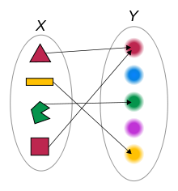
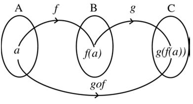
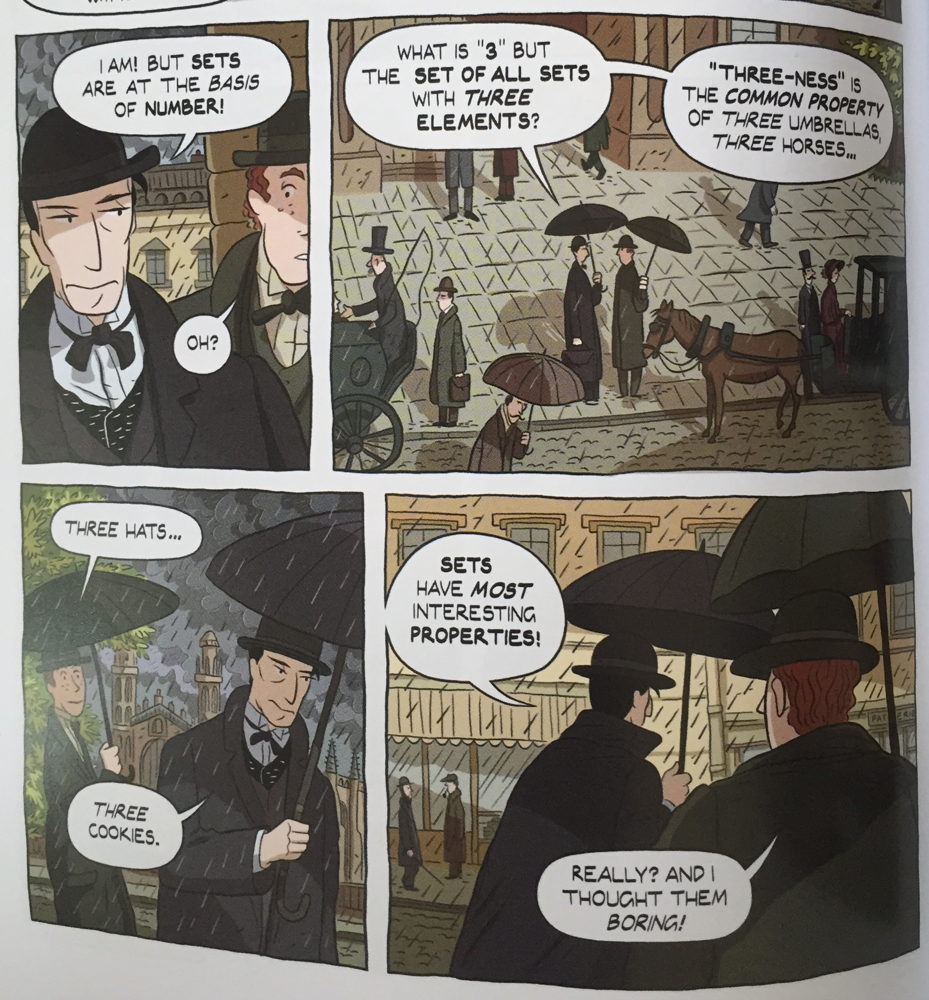
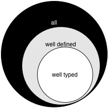

Functional Programming fundamentals
Suvash Thapaliya (@suvash)
hi@suva.sh
2015-05-28
Agenda
The Dress
It's a ….. !

Paradigm
n. A set of assumptions, concepts, values, and practices that constitutes a way of viewing reality for the community that shares them, especially in an intellectual discipline.
What we already know
Programming
"Take the contents of memory address x and add it to the contents of the register EAX."
- Compose / Decompose
History of Functional Programming
- Lambda Calculus (Church & Rosser 1936)
- LISP (McCarthy 1960)
- ML (1973) -— SmallTalk/C (1972)
- Miranda (1985)
- Haskell (1992)
- OCaml (1996)
- Clojure (2009)
- Idris (2011)
and many more to come.
Let's get started
Define terminologies as precisely as we can.
Value
Final result of a computation. Cannot be further reduced. Eg. 4, 'Hello'
Expression
A symbol or combination of symbols that represents a value or a relationship between values. Eg. 1 + 1 (reduces to 2), 2 is both a value and an expression.
All values are expressions.
Evaluation
The reduction of an expression to a value is called evaluation.
1 + 1 + 1 1 + 2 3
Evaluation (..contd)
+------------+
| Expression |
+------------+
|
V
+------------+
| Evaluation |
+------------+
|
V
+------------+
| Value |
+------------+
Variables
A reference to a value is a variable.
a = 2
Side effects
A step in the evaluation of an expression that has effects (read: changes/updates etc.) outside the expression itself is called a side effect.
print "hello" a = 1; a += 1
Side effects (…contd)
+------------+
| Expression |
+------------+
|
V
+------------+
| Evaluation |~~~> Side Effect
+------------+
|
V
+------------+
| Value |
+------------+
Statement
An expression that evaluates to nothing is a statement.
Expression in Python:
a = 1 + 1 a = lambda x: x ** 2
Statement in Python:
if True: a = 5 + 2456 else: a = 'goodbye'
Statement (…contd)
Only expressions in Clojure and Haskell
(def a (if true "hello" "goodbye"))
a = if True
then "hello"
else "goodbye"
What's up with statements ?
Statements perform/require side effects and are intrinsically imperative. (Insight: since they cannot be reduced to a value, they must be effecting beyond their bounds)
Statements are NOT values.
+------------+
| Statement |
+------------+
|
V
+------------+
| Evaluation |~~~> Side Effect
+------------+
|
X
Questions so far ?
Some of these things seem obvious, but they have huge implications on how one starts looking at programs.
Especially how side effects differentiate expressions/values from statements, as this is really the foundation that functional programming builds upon.
Hello Functions !
Simply a mapping of a set of values(aka domain) to another set of values(aka codomain).

Function
A function is an abstraction over expression, where one or several values in the expression are replaced by variables.
3 + 1 4 + 1 5 + 1 def inc (x): return x + 1
Anonymous Function
It is simply a function without a name.
lambda x: x + 1
\x -> x + 1
Free vs. bound variables & Closures
A variable that is not bound in a given expression is a free variable. The values for these variables are picked up from environments the functions exist in.
\x -> x + y
y is free variable above
A closure, is a function that makes use of free variables in its definition. The above function is a closure.
Function (contd..)
inc = lambda x: x + 1
(+ 1 1) (defn inc [x] (+ x 1))
inc = \x -> x + 1 inc x = 1 + x
Question: Is function a value ? ( Can it be further reduced ? )
Function arity
The number of arguments a function takes is its arity.
# arity 0 def zero (): return 0 # arity 1 def inc (x): return x + 1 # arity 2 def add (x, y): return x + y
Routine, Function & Procedure
A routine is an abstraction that does not return a value.
def a (x): print x def b (x): return x
a is a routine, b is a function.
A procedure can either be a routine or a function. Routines are imperative in nature.
Questions so far ?
Now that we have defined functions, we will be going further ahead.
Pure and Impure functions
Functions that always produce the same result given the same input and have no side effects are called pure functions.
The square of a number doesn’t change with the phases of the Moon. Also, calculating the square of a number should not have a side effect of warming your coffee.
All pure functions are guaranteed to always return the same values. This actually changes quite a bit about how one can reason about code.
Pure and Impure functions (..contd)
Which of the following is a pure function?
def inc (x): return x + 1 def printandreturn (x): print x return x def rand (x): return x * random.random()
In a pure functional language like Haskell all functions are pure. (For the curious ones here, side effects are modelled as pure functions using Monads, something I won't be talking about today.)
Referencial Transparency
An expression that is deterministic and without side-effects is referencially transparent.
It means it can be replaced by its value without changing the behaviour of the program.
Immutable vs. mutable data
Immutable simply means that cannot change. Think "read-only", "constants", Git. (without rewriting history)
Persistent Datastructures are immutable, and can’t be updated in-place.
Instead an updated copy of it is created if needed during changes.
Abstraction and Application
Two cornerstones of functional programming.
Function Application
Calling a function with some arguments(values) is applying that function to those arguments.
(f arg1 arg2) (+ 1 2)
f arg1 arg2 (+) 1 2 1 + 2
Higher Order functions
Functions that can return functions, and take functions as argument.
def apply (f, x, y): return f(x, y) apply(add, 1, 2) def incrementer (n): return lambda m: m + n add2 = incrementer(2) add2(4)
Partial Application
Take a function of arity n, and m < n arguments, and return a function of arity n - m.
f(a, b, x) = a * b + x f' = partial f(2) = 2 * b + x f'(b,x) = 2 * b + x f'' = partial f'(7) = 2 * 7 + x f''(x) = 2 * 7 + x f''' = partial f''(3) = 2 * 7 + 3 f'''(x) = 2 * 7 + 3
Currying (Schönfinkeling)
Schönfinkeling is the technique of transforming a function that takes multiple arguments (or an n-tuple of arguments) in such a way that it can be called as a chain of functions each with a single argument.
f(a, b, x) = a * b + x let cf = curried f(a,b,x) = \a -> \b -> \x -> (a * b + x) let cf' = cf(2) = \a -> \b -> \x -> (a * b + x) (2) = \b -> \x -> (2 * b + x) let cf'' = cf'(2) = \b -> \x -> (2 * b + x) (7) = \x -> (2 * 7 + x) let cf''' = cf'(2) = \x -> (2 * 7 + x) (3) = (2 * 7 + 3)
In Haskell, all functions are curried by default.
Lazy vs Strict/Eager evaluation
Function arguments are not evaluated until the function is actually invoked.
Lazy evaluation makes it harder to reason about space consumed by running program, but gives rise to other benefits (avoid repeated calculations, infinite datastructures)
Note : REPL is not lazy
endless x = x:endless(x) endlessTwos = endless 2 take 4 endlessTwos
Questions so far ?
Now that we have finished defining function behaviour, we can take a look at some basic operations.
Functional building blocks
map
applies a function to each element in a collection to yield a new collection
- abstracting away the managed iteration
- not only Lists, these can be applied to anything that can be modelled as a collection
map inc [1 2 3]
filter
applies a predicate(function) to each element in a collection to yield a new collection including the ones for which the predicate was true
- abstracting away the conditional
- applies over a collection
(filter even? [5 123 46])
fold (reduce)
applies a function that folds the collection with one element at a time (sticky notes fold)
- abstracting away the combination
(reduce + [1 2 3])
list comprehensions / generators
used for generating collections based on certain critieria
- abstracting away the generation
[Function | Domain/Input, Predicate]
[x*y | x <- [1..10], y <- [3..6], x > 5]
(for [x (range 1 10) :when (even? x) y (range 1 10)] (* x y))
Recursion
(defn factorial [n] (if (zero? n) 1 (* n factorial)))
Pattern matching
factorial 0 = 1 factorial n = n * factorial (n - 1)
Tail Recursion / Tail Call optimization
factorial' 0 acc = acc factorial' n acc = factorial1 n-1, n * acc factorial 0 = 1 factorial n = factorial' n 1
Function Composition

Function Composition (..contd)
Gluing functions together to create a new one.
(def twice (partial * 2)) (def thrice (partial * 3)) (def six-times (comp twice thrice))
twice = (*) 2 threePlus = (+) 3 threePlusAndTwice = twice . threePlus -- same as threePlusAndTwice x = twice ( threePlus x )
There are no variables defined in the intermediate functions. The power of partial applications (and / or currying)
Questions so far ?
Types

Types are there, whether you want them or not
Types are sets of values.
1 belongs to several types: it’s an Integer, a Number, a Value, the value 1.
One of the elements of the set of all Numbers. One of the elements of the set of all Integers. The only element in the set of all values that are 1.
1 has the type Value, Integer, Being 1
Static vs. Dynamic
Old discussion.
Dynamic : Defer the decision to deal with types until the program is executed
Static : Eliminiate incorrect programs before they are even run
Why bother with type systems ?

Types are about composability
Functions map from a set of values (type) to a set of values (type)
Argument values -———> Function -————> Return Value Type ———————————————> Type
The target of one function must be same as the source of another function if they were to be composed.
Modules / Namespaces / Packages
Collection of related functions. Also determines what function are exported(visible from outside).
Decompose to as many small functions as you deem reasonable. Only export the functions / types that is required to be used by other packages.
Think CommonJS style exports. Golang implicit exports.
Some languages take this to a whole different level by making modules as values. Eg. OCaml
Polymorphism
adj. having or occurring in several distinct forms
- Subtyping
- Parametric polymorphism
- Ad-hoc polymorphism
Parametric polymorphism
Parametric polymorphism refers to when the type of a value contains one or more (unconstrained) type variables, so that the value may adopt any type that results from substituting those variables with concrete types.
id :: a -> a id x = x
Can be used in context requiring
Integer -> Integer Char -> Char .. -> ..
Ad-hoc polymorphism
Ad-hoc polymorphism refers to when a value is able to adopt any one of several types because it, has been given a separate definition for each of those types.
- Type Class in Haskell
- Protocols in Clojure
Ad-hoc polymorphism (…contd)
data Duck = Duck | DaffyDuck data Horse = Horse class Walker a where walk :: a -> String instance Walker Duck where walk Duck = "wobble" walk DaffyDuck = "run" instance Walker Horse where walk horse = "gallop" walk_a_lot :: Walker a => a -> [String] walk_a_lot walker = take 3 $ repeat (walk walker)
So much more stuff, but will have to wrap here.
Lot more to explore, but this should be common to all languages that call themselves 'Functional'
Thanks
@suvash